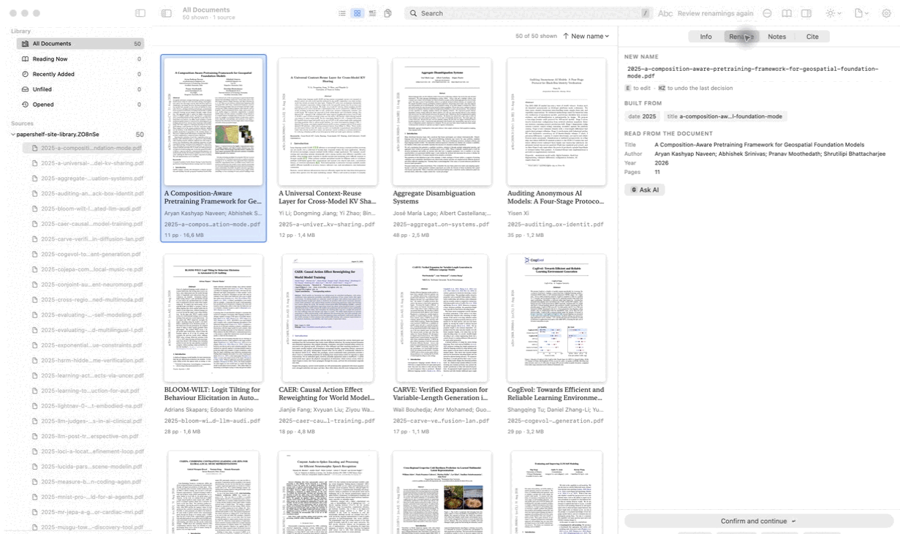

Five meanings, one click away.
The default vocabulary is visible, editable, and scoped to the library or a single paper.
Highlighters
Worth remembering
Agree, or confirmed
Definition or key term
Disagree, or doubtful
Follow up
PaperShelf keeps the PDFs on your Mac searchable, readable, annotated, and ready to cite. Its local MCP server lets an assistant help without sending the library away.
brew tap jonaprieto/papershelfbrew install --cask papershelfAd-hoc signed while notarization is on the roadmap.
A focused PDF reader, full screen when you need it, with notes and highlights that keep their page, passage, color, and meaning.
The default vocabulary is visible, editable, and scoped to the library or a single paper.
Select a highlight in the page and its matching note is selected in the inspector. Add a note, dictate one, or export the complete Markdown.
Use the query language when you know what you want, or press ⌘K when you only know that the feature exists.
Search by title, author, abstract, text, folder, tag, year, pages, or size, and remove each filter as a chip.
Commands, tags, projects, documents, passages, pages, and shortcuts all live behind one native command surface.
PaperShelf proposes names, shows what changes, keeps originals when you ask, and gives the reviewer the final word.
Drag a pattern into place, preview the result, and keep the text form beside it.
2025-kashyap-composition-aware-pretraining.pdfBuilt from date · author · titleIdentical bytes, same opening pages, and similar names are separate claims. The stronger claim wins.
Generate a complete BibTeX document from the current selection, with stable keys and missing fields called out where you can fix them.
Keys follow surname:year:firstword; formatting follows the settings you chose.
@article{kashyap:2026:composition,
author = {Kashyap Naveen, Aryan},
title = {A Composition-Aware Pretraining Framework},
year = {2026}
}Missing author, title, or year fields become navigable chips rather than silent blanks.
The bundled MCP server serves local search, reading, citations, highlights, projects, tags, and guarded file actions to a connected assistant.
Read tools work immediately. File changes and semantic profile writes are explicit and off by default where they can change your files.
Install the app, then add its bundled server to ChatGPT or another local MCP client. The files remain on this Mac.
When a PDF is more than a file, the boring parts matter: conversion, indexing, costs, passwords, activity, and a key that does not sit in a plaintext preference.
API keys live in Keychain when available. Spend is recorded locally. Password lists, plans, activity, and indexes stay in Application Support.
PaperShelf is deliberately small today, so each release can leave the shelf better than it found it.
Download the latest build, or read the source and make the next careful improvement.